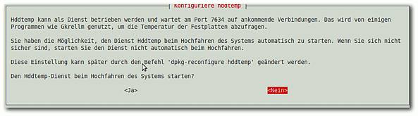
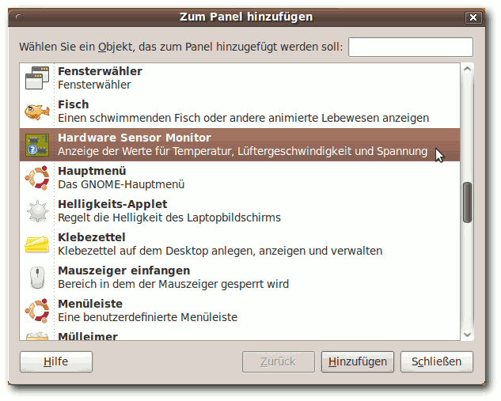
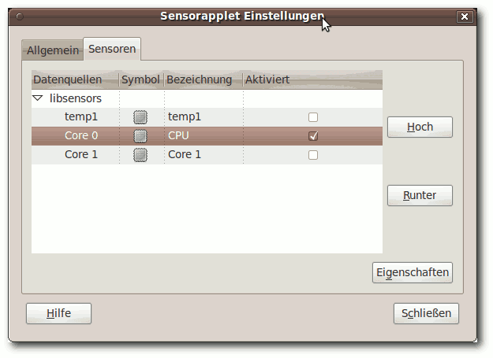
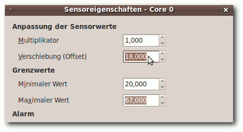
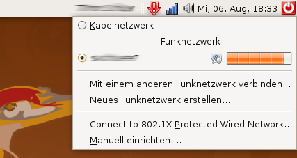

Acer Aspire One
Archivierte Anleitung
Dieser Artikel wurde archiviert, da er - oder Teile daraus - nur noch unter einer älteren Ubuntu-Version nutzbar ist. Diese Anleitung wird vom Wiki-Team weder auf Richtigkeit überprüft noch anderweitig gepflegt. Zusätzlich wurde der Artikel für weitere Änderungen gesperrt.
Hinweis:
Der Artikel befasst sich nur mit den Acer Aspire One der ersten Generation Aspire One A110(L/X) und Aspire One A150(L/X). Bei Anwendung auf andere Aspire-One-Modelle ist also Vorsicht geboten. Insgesamt ist der Artikel schlecht strukturiert, verwirrend und nicht immer wikikonform. Ergänzungen zu Problemen und Lösungen sollten zukünftig besser in den allgemeinen Artikel Netbooks einfließen.
Zum Verständnis dieses Artikels sind folgende Seiten hilfreich:
Das Acer Aspire One ist eines von zahlreichen Netbooks, die zum Netbook-Boom erschienen sind. Ähnlich wie die meisten Hersteller setzt auch Acer auf den Intel Atom Prozessor. Auch der integrierte Chipsatz stammt von Intel. Das Acer Aspire One kommt mit einem 8,9" Display, integriertem WLAN, einer 10/100MBit LAN-Karte, einer integrierten Webcam, zwei Multicardreader-Slots, einem VGA-Ausgang, einem Mic-Eingang und einem Headphone-Ausgang daher.
Vorweg¶
Hier wird die Installation von Ubuntu Karmic Koala auf dem Aspire One und Aspire One L (mit der 8GB SSD) erklärt. Fast alles hier entstammt dem englischen Wiki  , wo man auch einige Punkte detailliert nachlesen kann.
, wo man auch einige Punkte detailliert nachlesen kann.
Das Acer Aspire One funktioniert mit Ubuntu Karmic Koala (9.10) Out-of-the-box. Einige wenige Komponenten benötigen nur bei den Vorgängerversionen kleine Nacharbeiten.
Installation¶
Die Installation von Ubuntu auf dem Aspire One ist auf verschiedene Arten möglich. Ist ein ausreichend großer USB-Stick vorhanden (>= 1GB), ist der einfachste Weg der Installation den Stick boot-fähig zu machen und von diesem aus zu installieren. Siehe dazu Live-USB.
Der alternative Weg führt über ein externes CD/DVD-Laufwerk, welches über USB angeschlossen wird, oder eine Netzwerk-Installation per PXE-Boot. Letzteres hat den Vorteil, dass gleich die aktuellen Pakete installiert werden und somit ein langwieriges Distributions-Update entfällt.
Durch Drücken der F12 -Taste im Bootscreen des Aspire One, kann das Boot-Device ausgewählt und die Ubuntu-Installation gestartet werden.
Hinweis:
Da das Display etwas klein ist, kann es passieren, dass vereinzelt Fenster nicht ganz in den Bildschirm passen. Man kann diese Fenster mit Alt +<Linke Maustaste> verschieben. Alternativ kann man die Alternate-Installation verwenden [1].
Falls sich die Fenster unter der Verwendung von Compiz nicht über den oberen Rand verschieben lassen, kann man folgende Einstellung für Compiz in einem Terminal treffen [3]
gconftool --set --type=bool /apps/compiz/plugins/move/allscreens/options/constrain_y false
Problembehebung¶
Energieverwaltung¶
Alles funktioniert out of the Box. Auch der "Sleep Modus" beim Zuklappen des Deckels.
andere¶
Die Energieverwaltung wird nicht 100%ig unterstützt. So funktioniert der Ruhezustand nicht. Auch gibt es mit einzelnen Hardware-Komponenten Probleme mit dem Schlafmodus (siehe Sound).
Kartenleser¶
Hinweis:
Das Booten von der SD-Karte ist nicht möglich.
Einsatz einer Platinum 32 GB SDHC Speicherkarte Klasse 6 ist möglich.
ab Ubuntu 9.10¶
Die untenstehende Version über die /boot/grub/menu.lst funktioniert nicht mehr , da diese Datei nicht mehr existiert.
Daher muss nun die neue /boot/grub/grub.cfg angepasst werden. Da diese permanent "read-only" ist und nicht editiert werden darf, wird dies über die /etc/default/grub und einem anschliessenden Update gemacht:
Dazu öffnet man die Datei /etc/default/grub mit Root-Rechten [4], sucht die Zeile welche mit "GRUB_CMDLINE_LINUX_DEFAULT=" beginnt und fügt hinter dem Gleichheitszeichen den Wert "pciehp.pciehp_force=1" hinzu. Beispiel vorher/nachher:
GRUB_CMDLINE_LINUX_DEFAULT="quiet splash" GRUB_CMDLINE_LINUX_DEFAULT="pciehp.pciehp_force=1 quiet splash"
Anschließend muss nur noch die Datei /boot/grub/grub.cfg neu generiert werden:
sudo update-grub2
Die ganze Prozedur lässt sich mit den folgenden Befehlen vereinfachen. (Der erste Befehl funktioniert nur auf einem System, bei welchem der Standardwert der Variable noch nicht geändert wurde. Deswegen unbedingt nachher das Ergebnis kontrollieren.)
sudo sed -i '/GRUB_CMDLINE_LINUX_DEFAULT/s/quiet splash/pciehp.pciehp_force=1 quiet splash/g' /etc/default/grub sudo update-grub2
Der erste Befehl fügt die Aktivierung des für ExpressCards zuständigen Hotplug-Modul pciehp als Kernelbootparameter hinzu, in dem er die Standard-Bootoption "quiet splash" um "pciehp.pciehp_force=1" erweitert. Der zweite Befehl führt das Update aus - nach einem System-Neustart funktioniert der rechte Kartenleser, auch wenn keine Karte beim Booten eingelegt war.)
Lüfter¶
Hinweis:
Die Steuerung des Lüfters per Software ist auf zwei Weisen möglich. Entweder durch Skripte (acerfand) oder durch ein Kernelmodul (acerhdf). Auf keinen Fall sollten beide Möglichkeiten gleichzeitig genutzt werden!
acerhdf¶
Mit acerhdf kann der Lüfter des Acer Aspire One automatisch und abhängig von der gemessenen Temperatur gesteuert werden. Dies wird durch ein Kernelmodul ermöglicht. Erfolgreich getestet wurde es ab 8.10, aber wahrscheinlich ist es auch in früheren Versionen möglich. Ab Karmic (9.10) ist es bereits als Kernelmodul enthalten (siehe unten).
Das Modul wurde von Peter Feuerer geschrieben. Ausführliche Informationen zu acerhdf findet man auf der Homepage und in der README-Datei des Quellcode-Tarballs.
Das Modul ist bereits in der Version 0.5.16 (Release vom 2009-07-12) Bestandteil des Kernels und muss nicht extra kompiliert und installiert werden. Es sollte lediglich überprüft werden, ob das Modul (automatisch) beim Systemstart geladen wurde[3]:
$ lsmod | grep acerhdf acerhdf 7956 0
und ob es aktiviert wurde:
dmesg | grep acerhdf
die letzte Zeile bestätigt die Aktivierung:
acerhdf: Acer Aspire One Fan driver, v.0.5.16 acerhdf: Fan control off, to enable do: acerhdf: echo -n "enabled" > /sys/class/thermal/thermal_zone0/mode acerhdf: kernel mode fan control ON
Falls die letzte Zeile fehlt, acerhdf also nicht aktiviert ist, aber geladen, sollte die vom Entwickler Peter Feuerer genannte Möglichkeit, acerhdf bei Systemstart zu aktivieren, durch folgenden Einzeiler genutzt werden und nicht der Einzeiler aus der Ausgabe von acerhdf:
sudo sed -i '/exit 0/iecho -n "enabled" > /sys/class/thermal/thermal_zone0/mode' /etc/rc.local
Alternativ öffnet man die Datei /etc/rc.local mit Root-Rechten [4] und ergänzt die Zeile echo -n "enabled" > /sys/class/thermal/thermal_zone0/mode manuell vor der Zeile "exit 0" ein:
#!/bin/sh -e # [...] # By default this script does nothing. echo -n "enabled" > /sys/class/thermal/thermal_zone0/mode exit 0
Nach einem Systemneustart sollte die Ausgabe der Kernelmeldung
dmesg | grep acerhdf
wie folgt aussehen (die letzte Zeile bestätigt die Aktivierung!):
acerhdf: Acer Aspire One Fan driver, v.0.5.16 acerhdf: Fan control off, to enable do: acerhdf: echo -n "enabled" > /sys/class/thermal/thermal_zone0/mode acerhdf: kernel mode fan control ON
Wenn nicht die Standardkonfiguration verwendet werden soll, können die Parameter direkt beim Laden von acerhdf gesetzt werden:
modprobe acerhdf interval=5 fanon=65000 fanoff=60000 kernelmode=1
oder es wird eine Konfigurationsdatei angelegt, /etc/modprobe.d/acerhdf.conf mit folgendem Beispielinhalt:
options acerhdf interval=5 fanon=65000 fanoff=60000
interval regelt den Interval in dem das Modul die Temperatur prüft. Der Wert wird in Sekunden angegeben. Als Maximum werden 15 s empfohlen, Standard sind 10 s.
fanon: Die Temperatur in 1000stel °C bei der der Lüfter anspringt.
fanoff: Die Temperatur in 1000stel °C bei deren Unterschreitung der Lüfter abgeschaltet wird.
kernelmode: Der Wert 1 aktiviert das Modul nach dem laden. Wenn nach dieser Beschreibung vorgegangen wurde, wurde das Modul bereits standardmäßig oder durch einen Eintrag in der /etc/rc.local aktiviert.
ACHTUNG! In dieser Version des Moduls werden die Temperaturen in 1000stel °C angegeben. Wollte man also den Lüfter vorher bei 68°C einschalten lassen, hat man dort fanon=68 eingetragen. Dies muss nun auf fanon=68000 korrigiert werden.
Nach Änderungen bei laufendem Modul, egal ob aktiviert oder nicht, muss man es einmal entfernen und neu laden[3][7]:
modprobe -r acerhdf ; modprobe acerhdf
will man es nach dem laden auch aktivieren nutzt man
modprobe -r acerhdf ; modprobe acerhdf kernelmode=1
Temperaturanzeige mit acerhdf¶
Zur Temperaturanzeige muss das Modul nur geladen sein, es muss aber nicht aktiviert sein. So kann mit acerhdf die Temperatur angezeigt werden und der Lüfter wird weiterhin über das BIOS oder ein Skript geregelt.
a) im Terminal¶
Die Temperatur kann im Terminal[7] entweder als Einmalabfrage durch
cat /sys/class/thermal/thermal_zone0/temp
oder permanente Abfrage durch
watch --differences cat /sys/class/thermal/thermal_zone0/temp
beobachtet werden. Bei der permanenten Abfrage erfolgt der Abbruch mit STRG+C
b) im Panel¶
Die permanente Temperaturanzeige auf dem Desktop-Panel ist auch durch das sensors-Applet möglich :
Anleitung für Ubuntu 9.10 (Karmic Koala)
Das Paket
sensors-applet
wird benötigt, damit werden automatisch alle 4 Pakete
hddtemp libsensors-applet-plugin0 libsensors4 lm-sensors sensors-applet
installiert und rund 1.8 MB freier Speicherplatz belegt. 
Hinweis:
Den automatischen Aufruf der HDD-Konfigurationsmenüs abbrechen, wenn man statt einer Festplatte (HDD) eine Solid State Disk (SSD) benutzt. Ansonsten bootet das System stark verzögert mit einer Fehlermeldung (da keine Festplatte vorhanden ist).
Anm.: Die mittels sensors-Applet optionale Anzeige der Festplatten-Temperatur ist bisher nicht vom WIKI-Autor getestet/dem WIKI-Autor bekannt geworden.
Das Applet muss zur Panelleiste hinzugefügt werden, indem man eine freie Stelle mit der rechten Maustaste erwischt und den Menuepunkt Zum Panel hinzufügen auswählt.

Das in Karmic Koala enthaltene coretemp-Modul ist leider immer noch fehlerhaft. Daher erscheint zuerst kein Temperaturwert in der Panelanzeige. Die Kernelmeldung dmesg | grep coretemp liefert "unknown cpu" für den im Aspire One verbauten ATOM-Prozessor. Daher kompiliert man sich das passende coretemp-Modul wie folgt :
mkdir $HOME/coretemp # Arbeitsverzeichnis erstellen cd coretemp # und ins Verzeichnis wechseln
In einem Editor wird dort die Datei coretemp.c erstellt, dazu den Inhalt von http://git.kernel.org/?p=linux/kernel/git/torvalds/linux-2.6.git;a=blob_plain;f=drivers/hwmon/coretemp.c;h=4c15ed7eb7865ea5d7390d13451fb46b690439a4;hb=708a62bcd5f699756bae81491e64648fbf19e2a4
kopieren man und speichert die damit erstellte Datei coretemp.c in das eben erstellte Arbeitsverzeichnis $HOME/coretemp.
Außerdem muß die Datei Makefile erstellt werden, folgenden Inhalt kopieren und einfügen und ebenfalls im Arbeitsverzeichnis abspeichern :
obj-m += coretemp.o all: make -C /lib/modules/$(shell uname -r)/build M=$(PWD) modules clean: make -C /lib/modules/$(shell uname -r)/build M=$(PWD) clean
Dann die Kompilierung starten :
make
Wenn die Kompilierung ohne Fehlermeldung durchgelaufen ist :
sudo mv $HOME/coretemp/coretemp.ko /lib/modules/$(''uname -r'')/kernel/drivers/hwmon/
sudo modprobe coretemp # coretemp-Modul laden und aktivieren
sudo sed -i '/lp/icoretemp' /etc/modules # coretemp-Modul beim Systemstart laden (Eintrag in /etc/modules) Ein erster Test mit :
sensors # Temperatur auf der Konsole anzeigen lassen
sollte in etwa so ausfallen :
coretemp-isa-0000 Adapter: ISA adapter Core 0: +43.0°C (crit = +90.0°C) coretemp-isa-0001 Adapter: ISA adapter Core 1: +43.0°C (crit = +90.0°C) acerhdf-virtual-0 Adapter: Virtual device temp1: +0.1°C (crit = +0.1°C)
Abschlussarbeiten :
cd # Arbeitsverzeichnis verlassen rm -r coretemp # Arbeitsverzeichnis löschen
Es muss das sensors-Applet noch angepasst werden (Aktivierung bzw. Änderung der Bezeichnung):

Damit die Temperatur mit acerhdf übereinstimmt, muss noch im Hardware-Monitor die Temperatur um 18 Grad verschoben werden.

Hinweis:
Um Missverständnisse vorzubeugen : Der Lüfter wird nicht mit dem coretemp-Model oder dem sensor-Applet gesteuert, sondern mit dem acerhdf-Modul.
acerfand¶
Ab Ubuntu 8.04 kann die Lüfterregelung für das Aspire One als Dienst (oder Daemon) acerfand folgendermaßen eingerichtet werden. Man benötigt folgendes Paket[2]:
dmidecode
Anschließend benötigt man zwei Skripte, das acer_ec.pl-Skript und ein Skript, welcher als Daemon im Hintergrund läuft, acerfand. Anschließend muss man die Berechtigung auf "ausführbar" stellen und sie ins Programmverzeichnis kopieren. Nun muss man das Skript acerfand (am besten automatisch beim Booten) starten. Folgende Befehle führen alle Aktionen in einem Terminal durch [3]
wget http://aceracpi.googlecode.com/svn/trunk/acer_ec/acer_ec.pl wget http://electronpusher.org/~rachel/acerfand # Skripte herunterladen chmod a+x acer_ec.pl acerfand # Dateiberechtigung auf ausführend stellen sudo cp acer_ec.pl acerfand /usr/local/bin # kopiert Skripte ins Prgrammverzeichnis sudo acerfand # startet das Skript sofort
In der Datei /etc/rc.local kann man nun den Eintrag
acerfand
in einer neuen Zeile ergänzen [4], so wird der Lüfter immer ab Systemstart geregelt. Wichtig ist nur, dass der Eintrag vor der Zeile
exit 0
eingefügt wird. Den Temperaturbereich kann man einstellen in dem man die Datei /etc/acerfand.conf erstellt und mit folgendem Inhalt füllt:
INTERVAL=5 FANOFF=60 FANAUTO=70
Wobei INTERVAL den Intervall der Temperaturprüfung in Sekunden einstellt, FANOFF die Temperatur in °C für das Ausschalten des Lüfters und FANOUT die Temperatur in °C für das Einschalten des Lüfters. Laut Datenblatt verträgt die CPU des Aspire One (Intel Atom) bis zu 99°C, bevor sie beschädigt werden könnte.
Achtung!
Eine zu hohe Temperaturgrenze des Lüfters kann zu Beschädigung und Verbrennung des Systems führen!
Sound¶
ab Ubuntu 9.10¶
Alles funktioniert out of the Box. Direkt nach dem Start ist der Sound aktiv und kann über die Tastatur geregelt werden.
Soundprobleme beheben
die ersten paar Sekunden Audio werden "verschluckt":
die Datei /etc/modprobe.d/alsa-base.conf mitgksu gedit /etc/modprobe.d/alsa-base.conf
editieren und die Zeile options snd-hda-intel anpassen beziehungsweise neu anlegenoptions snd-hda-intel power_save=0 power_save_controller=N
Microfon funktioniert im Audio-Recorder aber nicht in Skype:
Dazu den linken Kanal des Microfons auf 0 stellen und den rechten Kanal auf 100%.
Der Standard-Mixer Audio-Einstellungen hat jedoch keine Balance Regelung für das Microfon.
Deshalb im Terminal den alsamixer benutzen oder den pavucontrol Mixer nachinstallierenpavucontrol
 mit apturl
mit apturl
Paketliste zum Kopieren:
sudo apt-get install pavucontrol
sudo aptitude install pavucontrol
ab Ubuntu 9.04¶
Der Sound funktioniert von Haus aus problemlos.
Webcam¶
Die Webcam sollte sofort funktionieren. Ausprobieren kann man das mit dem Programm cheese [2] und VLC [2]. Die Initialisierung der Webcam kann einen Augenblick lang dauern.
WLAN¶
ab Ubuntu 9.10¶
Funktioniert out of the Box. LED leuchtet bei aktivem WLAN.
MadWifi Treiber¶
Um den integrierten WLAN Chipsatz nutzen zu können, kann ein aktueller MadWifi-NG-Treiber verwendet werden. In den meisten Fällen bietet es sich an, auf das trunk-Repository des MadWifi-Projektes zurückzugreifen.
Grundlegend entspricht die Installation der Beschreibung auf MadWifi. Der passende Treiber wird mit Subversion heruntergeladen:
svn checkout http://svn.madwifi.org/madwifi/branches/madwifi-hal-0.10.5.6
Um die WLAN-LED zum Leuchten zu bringen, müssen folgende Zeilen der /etc/rc.local mit Root-Rechten hinzugefügt werden:
sysctl -w dev.wifi0.ledpin=3 sysctl -w dev.wifi0.softled=1
Damit blinkt die WLAN-LED ähnlich wie eine normale Netzwerkkarte.
Sobald diese befehle durchgelaufen sind, muss der Rechner neu gestartet werden. Wenn alles geklappt hat, kann der GNOME-Network-Manager genutzt werden, um die benötigten WLAN-Einstellungen zu treffen.
Im Idealfall bekommt man direkt alle WLANs in der Umgebung angezeigt:

KERNEL¶
Vielleicht hilft auch ein neuer Kernel die Probleme zu lösen. Kuki-Linux bietet auf Basis von Ubuntu ein eigenes für den Acer Aspire One konzipiertes Linux mit XFCE Oberfläche an. Dort kann aber auch nur der Kernel nebst Header heruntergeladen werden, der problemlos auch unter Ubuntu eingegliedert werden kann.
Video¶
Sollten Probleme bei der Video Wiedergabe auftreten (ruckeln): Terminal:
$ sudo dpkg-reconfigure xserver-xorg
1. Frage:
Use kernel framebuffer device interface?
--> YES
--> Logout -> Login Lösung von http://forum.ubuntuusers.de/post/2110515/
Tuning und Optionen¶
Folgende Artikel beschäftigen sich mit dem beschleunigen des Systems:
Nicht jeder Vorschlag aus den genannten Artikeln lässt sich umsetzen, da z.T. von einer anderen Hardware ausgegangen wird. Trotzdem lassen sich einige Punkte gut anwenden.
Netbook Remix¶
Momentan werden Erweiterungen für die GNOME-Oberfläche entwickelt, die die Verwendung auf Netbooks vereinfachen sollen. Der sogenannte Ubuntu Netbook Remix bietet z.B. eine vereinfachte Startoberfläche ähnlich der, die mit dem das original Ubuntu ausgeliefert wird.
Aufrüsten¶
Es gibt die Möglichkeit, den intern verbauten SSD-Speicherchip gegen eine 1,8 Zoll Festplatte oder über einen Adapter mit einer Compact Flash Karte zu wechseln. Darüberhinaus werden auch SSD-Speicherchips mit deutlich höheren Leistungsdaten für den AAO vertrieben (Super Talent FEM32GF13M mit 32GB).
Hardware-Info¶
| Acer Aspire One | |
| 150 L | |
| Bildschirm | 8.9" WSVGA hochauflösendes TFT LCD, Auflösung: 1024 x 600, 262.000 Farben |
| CPU | Intel® Atom™ Prozessor N270 1.60 GHz |
| RAM | 1024 MB SDRAM |
| HD | 120 GB HDD |
| Sonstiges | WLAN,LAN,Multi-in-1 Card Reader,3x USB 2.0,1 x Lautsprecher/Kopfhörer Line-out,1xLine-in/Mikrofon |
| 110 L | |
| Bildschirm | 8.9" WSVGA hochauflösendes TFT LCD, Auflösung: 1024 x 600, 262.000 Farben |
| CPU | Intel® Atom™ Prozessor N270 1.60 GHz |
| RAM | 512 MB SDRAM |
| HD | 8 GB SSD |
| Sonstiges | WLAN,LAN,Multi-in-1 Card Reader,3x USB 2.0,1 x Lautsprecher/Kopfhörer Line-out,1xLine-in/Mikrofon |
- Erstellt mit Inyoka
-
 2004 – 2017 ubuntuusers.de • Einige Rechte vorbehalten
2004 – 2017 ubuntuusers.de • Einige Rechte vorbehalten
Lizenz • Kontakt • Datenschutz • Impressum • Serverstatus -
Serverhousing gespendet von